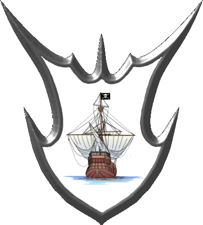

|

|
Das schwarze Brett
|
|
| Übersicht,
Anschläge und Stammtisch (RPG) |
|
Fragen an die Weisen Pherons
|
| Brendan (RIP) |
Ich bin ein Grübler und mache mir auch so meine Gedanken. Jedoch stoße ich manchmal an Grenzen und ich bitte deshalb die weisesten der Weisen, die Vertreter des Pheronkonvents darum, sich meines geistigen Engpasses, für den ich mich entschuldigen möchte, anzunehmen und mir helfen, gewisse Frage zu beantworten.
Ich stoße bei den physikalischen Eigenschaften diverser Waren an die Grenzen meiner Vorstellungskraft, weil ich weiß, dass etwas so ist, wie es meines Erachtens gar nicht sein kann.
Beginnen wir einmal ganz einfach:
1. Warum wiegt mein Fernglas soviel wie eine Kuh oder ein ausgewachsenes Pferd? Schleppe ich gar ein Observatorium in meiner Rocktasche mit mir herum?
2. Es mag ja sein, dass ein Laib Brot so schwer ist wie eine Bouteille Wein, aber Möbel mit demselben Gewicht passen doch bestenfalls in ein Puppenhaus, oder?
3. Andererseits – wer trägt ein Schmuckstück vom Gewicht eines Kleiderschranks um den Hals?
4. Ein Fisch ist möglicherweise so schwer wie ein Buch, aber ein Sklave dieses Gewichts müsste doch erstens unterernährt sein und zweitens im Wind leise rascheln – der Dehydrierung wegen, oder?
5. Auf meinem Schiff kann ich eben mal 500 Pilze einlagern, ohne, dass die Wellen über die Reling schwappen, aber mein Katapult, das so schwer ist wie 5000 Rinder bereitet beim Verladen keine Probleme. Wie funktioniert das?
6. Wenn ich anstelle des Katapults 5000 Rinder über ein Gebäude treibe, bricht dieses dann auch zusammen?
7. Wenn ich davon ausgehe, dass ein Rind auf einer Fläche von etwa 4 Fuß im Quadrat bequem eingepfercht werden kann, muss ich davon ausgehen, dass mein Katapult eine Fläche von 20.000 Fuß im Quadrat beansprucht, oder ist dieses höher als ein Turm?
8. Wie groß muss mein Schiffsdeck sein, damit ein Katapult darauf Platz hat, wenn ich im Laderaum die Kühe habe?
Verzeiht meine gotteslästerlichen Fragen, liebe Pheroni, aber ihr seid für die Weisheit auf Scherben bekannt. Vielleicht könnt ihr einem unwissenden Seemann auf die Sprünge helfen.
Sir Brendan,
Anführer der glorreichen Nation "Bruderschaft der Kaperfahrer",
Kapitän des Schnellseglers "Hooker"
Zur 24. Stunde am 61.Dunkelfrost im Jahre 418 |
13.01.05 11:27
 |
|
| Ardán Schwarzauge (RIP) |
*kratz sich erst am Kopf und fängt dann leise an zu kichern*
Sir Ardán Fálmanôr von Nerôná,
Vorsteher von Dîn Nerôná,
Kardinal im Dienste des einzig wahren Glaubens an Bendur,
Mitglied des Hohen Rates und Gesandter der Stille,
Verlobter der reizenden Lyselle Duval
Zur 24. Stunde am 61.Dunkelfrost im Jahre 418 |
13.01.05 11:30
|
|
| Brendan (RIP) |
Ich will ja auch gar nicht davon reden, dass mein Elefant so klein sein muß, dass er nichts wiegt, aber problemlos 1.500 Pferde tragen kann. Diese Tiere bewundere ich - man muß nur acht geben, dass sie der Wind nicht davonbläst, wenn sie unbeladen sind.
Sir Brendan,
Anführer der glorreichen Nation "Bruderschaft der Kaperfahrer",
Kapitän des Schnellseglers "Hooker"
Zur 1. Stunde am 62.Dunkelfrost im Jahre 418 |
13.01.05 11:38
|
|
| Judith Tatekohomni (RIP) |
*grinst*
Baronesse Caranethiriel von Hexenhain,
Vorsteherin von Lailoss,
Anführerin der glorreichen Nation "Weisse Wölfe"
Zur 1. Stunde am 62.Dunkelfrost im Jahre 418 |
13.01.05 11:40
|
|
| Lómiowyn Glyndil (RIP) |
Alles was passiert hat einen Sinn,
Ausnahmen sind die Regel.
Sir Lómiowyn Glyndil
Zur 1. Stunde am 62.Dunkelfrost im Jahre 418 |
13.01.05 11:40
|
|
| Nemo van Delving (RIP) |
Das selbe wenn man den Molochen und das Expedetionsschiff vergleicht. Der Expi ist nur etwas kleiner, trotzdem kann der Moloch das zweihundertfache tragen - Da kann nur Magie dahinter stecken!
Nemo van Delving,
Kapitän der Navisko
Zur 2. Stunde am 62.Dunkelfrost im Jahre 418 |
13.01.05 11:51
|
|
| Jakob Fugger (RIP) |
Ich bin ein Grübler und mache mir auch so meine Gedanken. Jedoch stoße ich manchmal an Grenzen
Ich verstehe Brendan aber wie sagte schon mein Opa wenn zu viele Fragen gestellt wurden: Überlasse das Denken doch den Pferden sie haben einen grösseren Kopf! ^^
Markgraf Jakob Fugger,
Vorsteher von Makiabtei Zypria,
Anführer der glorreichen Nation "Venezianern"
Zur 2. Stunde am 62.Dunkelfrost im Jahre 418 |
13.01.05 12:02
|
|
| Dimiona Reshemin von Borbra (RIP) |
Werter Herr Fugger,
habt ihr schon einmal einen Pferdeschädel geöffnet?
Diese Spezies hat zwar einen großen Kopf - doch weniger Hirn wie beispielsweise ein Ork - und letztere haben wiederrum weniger Hirnmasse wie ein Mensch.
Daher denke ich doch, das Brendan insgesamt besser denken kann wie ein Pferd.
Insgesamt sind seine Fragen sogar sehr gut durchdacht.
Hochachtungsvoll
Dimiona Reshemin von Borbra
Zur 3. Stunde am 62.Dunkelfrost im Jahre 418 |
13.01.05 12:08
|
|
| Louison Dírnaith (RIP) |
Mal ein Lösungsversuch eines Pheron-Mönches :
Das Fernglas wiegt wahrscheinlich so viel, da dort drinnen ja die ganzen Bilder versteckt sein müssen, die man mit dem Fernglas sehen kann.
Es sind nicht ganze Möbel, es sind nur Möbelteile. Erst durch die Ikea-Magie werden aus mehreren Teilen ein ganzes Möbelstück. Doch auch hier kann es Fizzels geben.
Manche Klunker wiegen wirklich schwer und sind der Anlass für gewisse Damen Korsetts zu tragen, damit sie aufgrund des Gewichtes nicht den Beinnamen Quasimodo bekommen.
Beim nächsten kommt es ganz auf den Fisch an. Ein Hai mag durchaus mehr wiegen als ein unterernährter Sklave. Die Frage ist, wiegt der Hai doppelt so viel, wenn er den Sklaven gefressen hat ?
Mit dem Katapult hat es ja auf sich, dass IHR das Katapult mit euch herum schleppt und nicht das Schiff. Allerdings würde ich gerne mal zusehen, wie ihr mit dem Katapult unter dem Arm das Ruder bedient.
Wenn ihr anstelle des Katapults 5000 Rinder über ein Gebäude treibt, dann könnte das Gebäude ein Schlachthaus sein und nicht zusammen brechen. Aber versucht einmal das Katapult immer wieder mit Kühen zu beladen und somit das Gebäude zu zerstören. Ich mag mich entsinnen, hierüber einmal gelesen zu haben. Auch diese Erfahrung würde mich brennend interessieren.
Bei der nächsten Frage geht ihr davon aus, dass Rind und Katapult die gleiche Masse pro Quadratfuss haben. Dies kann nicht sein, da Rind Hufe haben und keine Quadratfüße. Also ist die Frage allein schon im Ansatz falsch.
Das Schiffsdeck muss ausreichend gross sein. Da Schiffe ungefähr die halbe Größe einer Stadt haben, ist hier natürlich ausreichend Platz. Das ist ja doch logisch - oder ?
Zum Vergleich des Molochs und des Expeditionsschiffes :
Der Moloch hat eine ganz andere Konstruktion und einen wesentlich grösseren Tiefgang, weswegen er auch wesentlich behäbiger zu segeln ist, als das Expeditionsschiff.
Man möge mir verzeihen, wenn ich als Mönch hier etwas voreilig war. Keinesfalls will ich hier jemanden aus dem Pheronkonvent verstimmen.
Markgraf Louison,
Vorsteher von Sala en Orod,
Anführer der glorreichen Nation "Amber",
Verlobter der reizenden CeNedra Arafhen
Zur 3. Stunde am 62.Dunkelfrost im Jahre 418 |
13.01.05 12:15
|
|
| Brendan (RIP) |
Das klingt beinahe plausibel - also das mit den Bildern akzeptiere ich!
Aber:
1.Kann ich nun aber Möbelteile durch Brotlaibe und Weinflaschen ersetzen? Beispielstwese einen Flaschenstuhl oder ein Brotbett?
2. Es gibt also Korsette, die eine Schrankwand tragen können?
3. Was, wenn der Sklave Fisch isst?
4. Wenn ich einem Rind die Hufe abhacke und am Katapult anbringe, stimmt der Ansatz aber wieder.
Sir Brendan,
Anführer der glorreichen Nation "Bruderschaft der Kaperfahrer",
Kapitän des Schnellseglers "Hooker"
Zur 4. Stunde am 62.Dunkelfrost im Jahre 418 |
13.01.05 12:21
|
|
| Dimiona Reshemin von Borbra (RIP) |
eine wahrlich nette Überlegung, werter Sir Brendan.
Ich werde überlegen eure Idee mit den Kuhfüssen an Ausrüstungsteilen vielleicht einmal einer Untersuchung zu unterziehen.
Dimiona Reshemin von Borbra
Zur 4. Stunde am 62.Dunkelfrost im Jahre 418 |
13.01.05 12:25
|
|
| Brendan (RIP) |
Wird eine Kuh auch 5000 Mal so schwer, wenn ich ihr Achsen durch den Bauch stoße und Katapulträder anbringe?
Sir Brendan,
Anführer der glorreichen Nation "Bruderschaft der Kaperfahrer",
Kapitän des Schnellseglers "Hooker"
Zur 4. Stunde am 62.Dunkelfrost im Jahre 418 |
13.01.05 12:27
|
|
| Silèneanè von Satamylo (RIP) |
Möbelteile durch Brotflaschen und Weinlaibe zu ersetzen ist doch kinderleicht, Brendan ...
das ganze nennt sich dann in einer mir völlig fremden Sprache ... Designermöbel
Markgräfin Silèneanè Argul-Wiwileth,
Vorsteherin von Feste Wiwileth,
Anführerin der glorreichen Nation "Orden der Drachenritter",
Ehefrau des ehrenwerten Carandur Argul
Zur 4. Stunde am 62.Dunkelfrost im Jahre 418 |
13.01.05 12:27
|
|
| Brendan (RIP) |
Brotflaschen und Weinlaibe??? *wunder* wie bringe ich das Brot durch den Flaschenhals und warum ist der Laib traurig?
Sir Brendan,
Anführer der glorreichen Nation "Bruderschaft der Kaperfahrer",
Kapitän des Schnellseglers "Hooker"
Zur 4. Stunde am 62.Dunkelfrost im Jahre 418 |
13.01.05 12:29
|
|
| Jâhiera Tarán (RIP) |
Ohne ausführliche Recherchen in den Bibliotheken ist es natürlich nicht möglich allgemeingültige Aussagen zu treffen aber..
zu 1. Insbesondere aus Zwergenbrot lassen sich mithilfe einer Abwandlung der Ikea-Magie sehr schöne und vor allem sehr massive Einrichtungsteile fertigen. Leider sind diese normalerweise zu massiv um die Einsturzgefahr in den, mittels der auf Scherben üblichen Leichtbauweise errichteten, Gebäuden nicht drastisch zu erhöhen. Insofern pflegt man üblicherweise auf die herkömmlichen leichten Möbelbauteile zurückzugreifen.
Flaschen dienen meines Wissens nur als Dekorationsgegenstände.
2. Wenn man bedenkt dass besagte Korsette normalerweise die Stabilität aufweisen müssen um die Körpermasse eines durchschnittlichen Walfisches im Zaum zu halten, ist es durchaus nicht verwunderlich dass sie auch in der Lage sind eine Schrankwand zu tragen. Oder einen Mühlstein um den Hals, auch das soll es geben, ich erinnere mich da an eine Legende aus dem Jahre 287, wo eine Dame.... aber ich schweife ab!
3. Da die Gebote Pherons Sklavenhaltung generell untersagen, ist die Frage der richtigen Ernährung von Sklaven irrelevant.
4. Wenn man dem Rind die Füße abhackt und stattdessen am Katapult anbringt, passen logischerweise soviel Katapulte auf den entsprechenden Raum wie vorher Rinder - ist doch vollkommen logisch oder?
Malizia de Ville,
Kardinälin im Dienste des einzig wahren Glaubens an Pheron,
La Reine des Roses
Zur 5. Stunde am 62.Dunkelfrost im Jahre 418 |
13.01.05 12:34
|
|
| Louison Dírnaith (RIP) |
Brendan, habt ihr noch nie von einem Weinregal gehört ? Einem Brottisch ? Einem Bierschrank ? Einer Fleischtheke ? Einer Schmuckschatulle ?
Nein - nicht die Korsette tragen, sondern die Frauen. Die Korsette bewirken nur, dass die Frauen unter der Last nicht zusammen brechen.
Wenn der Sklave Fisch ist, dann wahrscheinlich mit Stäbchen, daher der Name Fischstäbchen. Wenn ihn dann der Hai frisst, müsste der Hai 3x so viel wiegen wie zuvor + die Stäbchen.
Wenn ihr dem Rind die Hufe abhackt, wird es verbluten und das Blut einen Morast bilden, in dem das Katapult versinkt. Das Gleiche gilt natürlich, wenn ihr Achsen durch die Kuh treibt, es sein denn, sie soll so über einem Lagerfeuer der Fizzelmöbelteile gegrillt werden.
Markgraf Louison,
Vorsteher von Sala en Orod,
Anführer der glorreichen Nation "Amber",
Verlobter der reizenden CeNedra Arafhen
Zur 5. Stunde am 62.Dunkelfrost im Jahre 418 |
13.01.05 12:35
|
|
| Brendan (RIP) |
Es könnte natürlich auch sein, dass beim katapult nur die Räder und die Achsen etwas wiegen und der Rest gar nichts - wie die Elefanten ...
Sir Brendan,
Anführer der glorreichen Nation "Bruderschaft der Kaperfahrer",
Kapitän des Schnellseglers "Hooker"
Zur 5. Stunde am 62.Dunkelfrost im Jahre 418 |
13.01.05 12:38
|
|
| Silèneanè von Satamylo (RIP) |
das mit den Brotflaschen und Weinlaiben ist wiederum einfach zu erklären
der Laib ist traurig da nun ja kein Laib mehr ist , welcher daran gehindert wurde , davon zu rollen.
Sondern eher ein Teil eines Leibes.
Und wie man Brot durch den Flaschenhals bringt, dies ist nun wirklich die einfachste Übung.
Ich kenne so viele Flaschen, welche den Hals nicht voll kriegen können.
Markgräfin Silèneanè Argul-Wiwileth,
Vorsteherin von Feste Wiwileth,
Anführerin der glorreichen Nation "Orden der Drachenritter",
Ehefrau des ehrenwerten Carandur Argul
Zur 5. Stunde am 62.Dunkelfrost im Jahre 418 |
13.01.05 12:38
|
|
| Brendan (RIP) |
Ja, Sileneane, wir alle kennen die Laoten, aber ich glaubte, du meinst die Leergebinde aus Glas ...
Sir Brendan,
Anführer der glorreichen Nation "Bruderschaft der Kaperfahrer",
Kapitän des Schnellseglers "Hooker"
Zur 5. Stunde am 62.Dunkelfrost im Jahre 418 |
13.01.05 12:42
|
|
| Silèneanè von Satamylo (RIP) |
*grinst* ach ist das nicht ein und das selbe ???
Markgräfin Silèneanè Argul-Wiwileth,
Vorsteherin von Feste Wiwileth,
Anführerin der glorreichen Nation "Orden der Drachenritter",
Ehefrau des ehrenwerten Carandur Argul
Zur 5. Stunde am 62.Dunkelfrost im Jahre 418 |
13.01.05 12:44
|
|
| Brendan (RIP) |
Nein - die aus Glas sind zu etwas Nütze.
Sir Brendan,
Anführer der glorreichen Nation "Bruderschaft der Kaperfahrer",
Kapitän des Schnellseglers "Hooker"
Zur 6. Stunde am 62.Dunkelfrost im Jahre 418 |
13.01.05 12:47
|
|
| ZoLOriel (RIP) |
Nun.. Flüssig Brot.. ich meine schoneinmal etwas von Brottrunk oder Bier gehört zu haben.
Nun und der WeinLaib.. schaut auf Euren Bauch Brendan.. oder ist das ein RumLaib?
ZoLOriel
Zur 6. Stunde am 62.Dunkelfrost im Jahre 418 |
13.01.05 12:52
|
|
Isabella Cortez
 |
ZoLOriel, ich würde sagen das ist ein Rumfass, kein Laib, und wenn überhaupt wäre das nicht eher der Leib? *grinst*
Isabella Cortez,
Siegerin beim Wettbewerb der 100 Worte
Zur 6. Stunde am 62.Dunkelfrost im Jahre 418 |
13.01.05 12:56
|
|
| Silèneanè von Satamylo (RIP) |
*grübel* da muss ich beim Studium von Flaschen etwas falsch verstanden haben , obwohl
*kopfschüttel* mir wurde dies so erklärt.
Flasche ist gleich zu setzen mit Laot
Laot ist manchmal voll , ergo das gleiche wie Flasche aus Glas ...
also kann ich nur zu dem Schluss kommen
Glas ist Laot *verwirrt vom Anschlagbrett geht um ihre Studien weiter fort zu setzen*
Markgräfin Silèneanè Argul-Wiwileth,
Vorsteherin von Feste Wiwileth,
Anführerin der glorreichen Nation "Orden der Drachenritter",
Ehefrau des ehrenwerten Carandur Argul
Zur 7. Stunde am 62.Dunkelfrost im Jahre 418 |
13.01.05 13:08
|
|
| Brendan (RIP) |
Das ist eine Rumkugel! *auf Bauch klopft*
Sir Brendan,
Anführer der glorreichen Nation "Bruderschaft der Kaperfahrer",
Kapitän des Schnellseglers "Hooker"
Zur 7. Stunde am 62.Dunkelfrost im Jahre 418 |
13.01.05 13:09
|
|
| Beowulf (RIP) |
ehm.....
Brendan bringt einen doch immer wieder zum grübeln....
Sir Beowulf,
Vorsteher von Lager Süd,
Priester im Dienste des einzig wahren Glaubens an Pheron,
Ehemann der reizenden Black Velvet
Zur 7. Stunde am 62.Dunkelfrost im Jahre 418 |
13.01.05 13:14
|
|
| Dimiona Reshemin von Borbra (RIP) |
Werter Brendan,
also hier bei mir verenden leider die Kühe, wenn ich ihnen eine Achse durch den Bauch treibe. Sie sind hernach nur noch als Braten für meine Leute nutzbar.
Bitte setzt mich in Kenntnis, wenn ihr da andere Erfahrungen macht. An solchem Wissen bin ich immer interessiert.
Hochachtungsvoll
Dimiona Reshemin von Borbra
Zur 10. Stunde am 62.Dunkelfrost im Jahre 418 |
13.01.05 13:51
|
|
| Rhianna (RIP) |
Zu dem Problem des Gewichtes des Elefanten:
Wahrscheinlich hat der Elefant schon ein Gewicht, das groß genug ist, um nicht gerade vom Wind davongetragen zu werden. Doch trägt er es selbst und es ist daher für die Treiber/ Besitzer ohne Belang und sie machen sich daher nicht die unnötige Mühe den Elefanten zu wiegen.
Wenn Ihr versuchen würdet den Elefanten zu tragen, der wiederrum mit 1500 Pferden beladen ist, würdet Ihr sicherlich einen deutlichen Unterschied zu dem Gewicht der 1500 Pferde allein spüren. Würde ich als Nicht- Elefantenbesitzer einfach so annehmen.
Rhianna,
Priesterin im Dienste des einzig wahren Glaubens an Tura
Zur 11. Stunde am 62.Dunkelfrost im Jahre 418 |
13.01.05 14:10
|
|
| Kassandra Alfiriel (RIP) |
Nun eure Fragen mögen durchaus interessant sein, für Mathematiker, ich weiß nicht ob der Maki-Konvent eure Fragen nicht eher beantworten können. Einzig zur Frage nummer 6 möchte ich mich äußern: Es mag einige Strohütten geben die durch in Panik geratene Rinderherden niedergetrampelt werden.
Ich besitze einen Bauernhof, wo auch des Öfteren die Herden auf andere Weiden getrieben werden und machte doch stets die Beobachtung, dass sie stehenden Objekten versuchen auszuweichen anstatt sie zu überrennen. Einmal gab es gar einen Fall, wo Fibi Flinkfuss seinem Namen wirklich keine Ehre machte´. Er war, wie können wir uns immer noch nicht erklären, vor die galoppierenden Pferde geraten und sie kamen immer näher auf ihn zu, dieser Anblick hatte ihn wohl so geschockt, dass er stocksteif stehen blieb und keine Anstalten machte vor ihnen wegzurennen. Wunderbarerweise teilte sich die Herde in der MItte und rannte an ihm vorbei ohne ihn zu verletzen, abgesehen von dem Husten den er durch das Einatmen des aufgewirbelten Staubs davontrug.
Ich hoffe euch weitergeholfen zu haben.
Grüße
Kassandra Alfiriel,
Kardinälin im Dienste des einzig wahren Glaubens an Pheron,
Ehefrau der reizenden Piéròtéss Alfiriel
Zur 12. Stunde am 62.Dunkelfrost im Jahre 418 |
13.01.05 14:12
|
|
| Kassandra Alfiriel (RIP) |
Die schlußfolgerung die ich aus diesem erlebnis ziehe, fehlt ja, muss ich gerade feststellen, nun was ich sagen wollte, ich denke nicht, dass ihr es schaffen würden die kühe gegen das steinhaus rennen zu lassen, ergo könnte es auch nicht niedergetrampelt werden, zumal die meisten Steinhäuser auch zu groß sind, als dass eine Kuh so einfach auf das Dach gelingen könnte
Kassandra Alfiriel,
Kardinälin im Dienste des einzig wahren Glaubens an Pheron,
Ehefrau der reizenden Piéròtéss Alfiriel
Zur 12. Stunde am 62.Dunkelfrost im Jahre 418 |
13.01.05 14:15
|
|
| Chivalric (RIP) |
Der Hai wiegt immer so viel wie ein Hai wiegen sollte. Denn der Hai an sich interessiert sich für eines: das nächste Fressen. Was er soeben gefressen hat, ob das viel war und wieviel das wiegen könnte, sind Fragen, die sich der Hai nicht stellt. Da er immer Hunger hat, geht er auch immer davon aus, daß sein Magen leer ist, weswegen er sich für gewöhnlich keine Gedanken über Gewichtsprobleme macht. Das würde ihn sowieso nur behindern, mit Depressionen läßt sich sicher schwer jagen.
Allerdings sollte der kluge Seemann nicht auf die Idee kommen, mitten auf dem Meer den Hai zu zerlegen. Dieses Tier mag zwar ein Meister der Verdrängung sein, aber der Mensch gehört du der Sorte Lebewesen, die sich viel zu oft Gedanken über Dinge machen, die sie besser ignorieren sollten.
Mein Großvater erzählte mir von einer Crew, die genau diesen Fehler beging und sich leider damit befaßte, ob die Schürfergruppe samt Erträgnisse der letzten Wochen, die sie im Inneren des Haies fand, nicht vielleicht ein wenig zu schwer für ihr Schiff sein könnte...Ich kann es zwar nicht ganz nachvollziehen, aber er erwähnte ein Geräusch, daß sich so anhöre, wie wenn man einen Elefanten durch ein Schlüsselloch ziehe.
Chivalric
Zur 14. Stunde am 62.Dunkelfrost im Jahre 418 |
13.01.05 14:51
|
|
| Aimée de Jarnaud (RIP) |
Mir stellt sich hier noch eine ganz andere, brennende Frage: Wer seid das ihr?
Lady Aimée de Jarnaud,
Anführerin der glorreichen Nation "Fausse Identité",
Beste Heilerin der Scherbe
Zur 18. Stunde am 62.Dunkelfrost im Jahre 418 |
13.01.05 15:35
|
|
| Dimiona Reshemin von Borbra (RIP) |
hm.. verzeiht werte Dame - mir entgeht irgendwie der Sinn eurer Frage - könntet ihr das nächer erläutern?
Dimiona Reshemin von Borbra
Zur 19. Stunde am 62.Dunkelfrost im Jahre 418 |
13.01.05 15:51
|
|
| Ragnar Abir (RIP) |
"Es könnte natürlich auch sein, dass beim katapult nur die Räder und die Achsen etwas wiegen und der Rest gar nichts - wie die Elefanten ..."
Brendan - das würde heißen, ein Elefant ist auch nur ein Katapult ohne Räder und Achsen?
Alexandrus Maximus
Zur 22. Stunde am 62.Dunkelfrost im Jahre 418 |
13.01.05 16:33
|
|
| Ragnar Abir (RIP) |
...soll weiterhin heißen das man ein vollfunktionsfähiges Katapult hat, wenn man Achsen und Räder an einen handelsüblichen Haushalts-Elefanten anbringt !?
Alexandrus Maximus
Zur 7. Stunde am 63.Dunkelfrost im Jahre 418 |
13.01.05 18:40
|
|
| Chivalric (RIP) |
Das würde immerhin diesen merkwürdigen Nasenfortsatz erklären, zu irgendetwas muß der ja schließlich gut sein... *grübelt*
Chivalric
Zur 13. Stunde am 63.Dunkelfrost im Jahre 418 |
13.01.05 20:14
|
|
| Sol Feuerschatten (RIP) |
Muss ich jetzt Pheroni werden um die Fragen zu beantworten? Ich glaube, das sich nur ein Bendurianer auf dem Schiff auskennt.
Sol Feuerschatten,
Kardinal im Dienste des einzig wahren Glaubens an Larja,
Anführer der glorreichen Nation "Larjas Schattenläufer",
Gisir N`Vaelahrn - Schattenwächter,
Verlobter der reizenden Narndil Biunda
Zur 15. Stunde am 63.Dunkelfrost im Jahre 418 |
13.01.05 20:42
|
|
Übersicht,
Anschläge und Stammtisch (RPG)
|
|
|
|